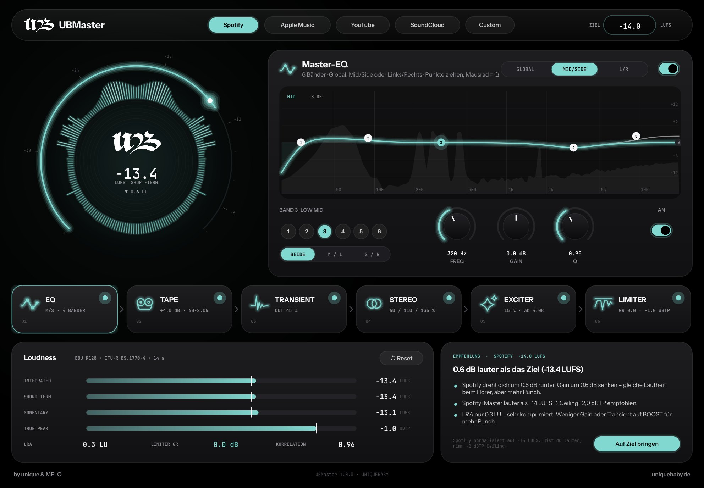

Master-EQ
6 Bänder mit Low/High-Cut, Shelves und zwei Bells. Umschaltbar zwischen Global, Mid/Side und Links/Rechts – jedes Band wirkt auf beide, Mid oder Side.
GLOBALM/SL/R
 UBMaster
Download
UBMaster
Download
Die komplette Mastering-Kette in einem Plugin: EQ, Tape, Transient, Stereo, Exciter und True-Peak-Limiter – plus Loudness-Modi, die dir genau sagen, wie du dein Ziel für Spotify, Apple Music, YouTube oder SoundCloud triffst.
In genau dieser Reihenfolge – so wie man auch mit einzelnen Plugins mastern würde. Jedes Modul lässt sich per Klick aus- und einschalten.
6 Bänder mit Low/High-Cut, Shelves und zwei Bells. Umschaltbar zwischen Global, Mid/Side und Links/Rechts – jedes Band wirkt auf beide, Mid oder Side.
Band-Sättigung mit wählbarem Spektrum: Du legst fest, in welchem Frequenzbereich die Sättigung wirkt – der Rest bleibt unberührt.
Adaptiver, spektraler Transienten-Prozessor: findet Attacks frequenzabhängig und cuttet oder boostet sie – nur dort, wo es nötig ist.
Stereobreite getrennt in Low, Mid und High – Bass mono halten, Höhen öffnen. Mit Vectorscope und Korrelationsanzeige.
Erzeugt neue Obertöne ab einer frei wählbaren Frequenz – Tube (gerade) bis Tape (ungerade). Glanz ohne EQ-Boost.
True-Peak-Brickwall mit Lookahead und 8×-Peak-Erkennung. Ceiling einstellen, Gain rein – mit Gain-Reduction-Verlauf.
Spotify, Apple Music, YouTube, SoundCloud oder Custom: LUFS-Meter (Integrated, Short-term, Momentary, True Peak, LRA), einstellbarer Ziel-LUFS und konkrete Empfehlungen, wie du ihn erreichst. Ein Klick auf „Auf Ziel bringen“ stellt den Limiter passend ein.
Jeder Modus setzt Ziel-LUFS und Ceiling. Die Empfehlungsbox rechnet live mit und sagt dir in Klartext, was du drehen musst.
Spotify normalisiert auf −14 LUFS. Bist du lauter, wirst du runtergedreht – nimm dann −2 dBTP als Ceiling.
Beispiel-Werte eines lauten Club-Mixes – im Plugin misst UBMaster deinen Track live.
In der Mitte der Loudness Halo – ein Spektrum-Ring wie Vinyl-Rillen mit deinem Ziel als leuchtendem Marker. Darunter die Kette, unten Meter und Empfehlungen.

Welche Aufgabe jedes Modul übernimmt – und mit welchen bekannten Plugins es sich von der Funktion her vergleichen lässt.
| MODUL | UBMASTER | VERGLEICHBAR MIT |
|---|---|---|
| Master-EQ | 6-Band-EQ, Global · Mid/Side · Links/Rechts, Band-Zuordnung pro Kanal | FabFilter Pro-Q 4iZotope Ozone EQ |
| Tape-Sim | Band-Sättigung mit frei wählbarem Frequenzbereich, Drive, Character, Mix | FabFilter Saturn 2UAD Ampex ATR-102Softube Tape |
| Transient | Adaptiver, spektraler Transienten-Prozessor – frequenzabhängig cutten oder boosten | oeksound Spiff |
| Stereo-Tool | Stereobreite in 3 Bändern (Low/Mid/High) mit Vectorscope und Korrelation | iZotope Ozone ImagerWaves S1 Stereo Imager |
| Exciter | Obertöne ab wählbarer Frequenz, Tube (gerade) bis Tape (ungerade) | iZotope Ozone ExciterAphex Aural Exciter |
| Limiter | True-Peak-Limiter mit Lookahead, Ceiling und Gain-Reduction-Anzeige | FabFilter Pro-L 2iZotope Ozone Maximizer |
| Loudness | LUFS Integrated/Short-term/Momentary, True Peak, LRA, Plattform-Modi, Ziel-LUFS + Empfehlungen | Youlean Loudness MeteriZotope Insight |
| Gesamtpaket | Alle sieben Module in einer Kette – inklusive spektraler Transienten-Bearbeitung und Tape-Sättigung mit wählbarem Spektrum | iZotope Ozone |
Alle genannten Produktnamen sind Marken ihrer jeweiligen Inhaber. UBMaster steht in keiner Verbindung zu diesen Herstellern.
Installer + Deinstaller für beide Systeme. Danach DAW neu starten – UBMaster liegt unter UNIQUEBABY. Als letztes Plugin auf den Master-Bus.
Common Files\VST3SmartScreen-Hinweis? „Weitere Informationen“ › „Trotzdem ausführen“.
Installer per Rechtsklick › Öffnen starten (nicht notarisiert).
Pro Tools (AAX) folgt, sobald die Avid-/PACE-Signierung eingerichtet ist.